#include "Common.hh"#include <X11/Xlib.h>#include <gtk/gtk.h>#include "Plot_data.hh"#include "Plot_line_properties.hh"#include "Plot_window_properties.hh"#include "ComplexCell.hh"#include "FloatCell.hh"#include "Quad_PLOT.hh"#include "Workspace.hh"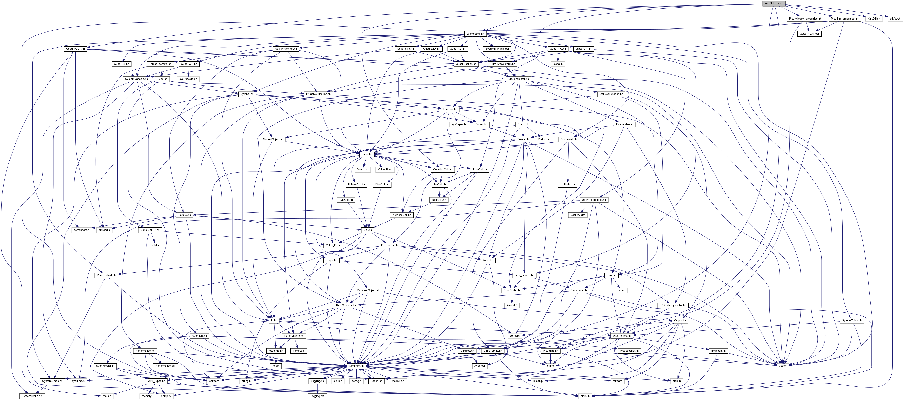
Go to the source code of this file.
Classes | |
| struct | Plot_context |
| Some xcb IDs (returned from the X server) More... | |
Enumerations | |
| enum | { FONT_SIZE = 10 } |
| the size of the font to be used for texts More... | |
Functions | |
| void * | plot_main (void *vp_props) |
| the main() program of the thread that handles one plot window. More... | |
| const Plot_window_properties * | plot_stop (const Plot_window_properties *vp_props) |
| the window properties of one plot window. More... | |
| static void | cairo_set_RGB_source (cairo_t *cr, Color color) |
| same as standard cairo_set_RGB_source() but with Color instead of double red, green, and blue values. More... | |
| static void | draw_line (cairo_t *cr, Color line_color, int line_style, int line_width, const Pixel_XY &P0, const Pixel_XY &P1) |
| draw a line from P0 to P1 More... | |
| static void | draw_circle (cairo_t *cr, Pixel_XY P0, Color color, int size) |
| draw a circle with diameter size around P0 More... | |
| static void | draw_delta (cairo_t *cr, Pixel_XY P0, bool up, Color color, int size) |
| draw a ▲ or ▼ with given size around P0 More... | |
| static void | draw_quad (cairo_t *cr, Pixel_XY P0, bool caro, Color color, int size) |
| draw a ■ or ◆ with given size around P0 More... | |
| static void | draw_cross (cairo_t *cr, Pixel_XY P0, bool plus, Color color, double size, int size2) |
| draw a 🞤 or 🞫 with given size around P0 More... | |
| static void | draw_point (cairo_t *cr, Pixel_XY P0, int point_style, const Color outer_color, int outer_dia, const Color inner_color, int inner_dia) |
| draw a point with given point_style and size around P More... | |
| void | draw_marker (cairo_t *cr, Pixel_XY P0) |
| draw a red marker for debugging purposes (to show where pixel P0 is) More... | |
| static void | draw_arrow (cairo_t *cr, Pixel_XY O, Pixel_XY A, const Color color) |
| draw an arrow from O to A More... | |
| const char * | format_user_tick (double val, int tidx, const char *format, const char *percent) |
| format val according to format (with percent pointing to % in format, e.g. d or f like in printf()). More... | |
| const char * | format_tick (double val, double dV, int idx, const char *format) |
| format the text of tick idx (with value val) according to format. More... | |
| void | cairo_string_size (double &lx, double &ly, cairo_t *cr, const char *text, const char *font_name, double font_size) |
| return the size of single_line string text when printed with font font_name of /// size font_size More... | |
| void | cairo_multiline_size (double &len_x, double &len_y, cairo_t *cr, const char *lines, const char *font_name, double font_size) |
| return the size len_x:len_y of the multi_line string lines when printed with font font_name of size font_size More... | |
| void | draw_text (cairo_t *cr, const char *text, const Pixel_XY &xy) |
| draw single-line string text at position xy More... | |
| void | draw_multiline (cairo_t *cr, const char *lines, Pixel_XY xy, double width) |
| draw multi-line string lines at position xy More... | |
| void | draw_legend (cairo_t *cr, const Plot_context &pctx, bool surface_plot) |
| draw a legend for the different plot lines More... | |
| static void | pv_swap (Pixel_XY &P0, double &Y0, Pixel_XY &P1, double &Y1) |
| swap pixels P0 with value Y0, and P1 with value Y1 More... | |
| void | draw_triangle (cairo_t *cr, const Plot_context &pctx, int verbosity, Pixel_XY P0, double H0, Pixel_XY P1, Pixel_XY P2, double H12) |
| draw a 3D triangle where one point P0 is at visual height H0 and the other two points P1 and P2 are the same at visual height H12. More... | |
| void | draw_triangle (cairo_t *cr, const Plot_context &pctx, int verbosity, Pixel_XY P0, double H0, Pixel_XY P1, double H1, Pixel_XY P2, double H2) |
| draw a 3D triangle where the points P0, P1, and P2 are at visual heights H0, H1, and H2 respectively. This is done by splitting the triangle into two triangles that each have 2 points at the same height. More... | |
| void | draw_X_grid (cairo_t *cr, const Plot_context &pctx, bool surface_plot) |
| draw the (vertical) X grid-lines of the plot (starting from the X axis) More... | |
| void | draw_Y_grid (cairo_t *cr, const Plot_context &pctx, bool surface_plot) |
| draw the (horizontal) Y grid-lines of the plot (starting at the Y axis) More... | |
| void | draw_Z_grid (cairo_t *cr, const Plot_context &pctx) |
| draw the (slanted) Z grid-lines of the plot More... | |
| void | draw_plot_lines (cairo_t *cr, const Plot_context &pctx) |
| draw normal (2D) data lines More... | |
| void | draw_surface_lines (cairo_t *cr, const Plot_context &pctx) |
| draw surface (3D) data lines More... | |
| static void | do_plot (GtkWidget *drawing_area, const Plot_context &pctx, cairo_t *cr) |
| plot the data More... | |
| gboolean | plot_destroyed (GtkWidget *top_level) |
| callback when the plot window is destroyed More... | |
| cairo_surface_t * | add_border (const Plot_context &pctx, cairo_surface_t *old_surface) |
| return a new surface with window borders, or 0 on failure More... | |
| static void | save_file (Plot_context &pctx, cairo_surface_t *surface) |
| save the pixels of the plot to a file More... | |
| gboolean | draw_callback (GtkWidget *drawing_area, cairo_t *cr, gpointer user_data) |
| callback when the plot window shall be redrawn More... | |
| static void * | gtk_main_wrapper (void *w_props) |
| make gtk_main() suitable for pthread_create() and maybe tell when it is finished More... | |
Variables | |
| static int | verbosity = 0 |
| debug verbosity More... | |
| const char * | FONT_NAME = "sans-serif" |
| the font to be used for texts More... | |
| static vector< Plot_context * > | all_plot_contexts |
| all Plot_contexts (= all open windows) for ⎕PLOT More... | |
| static int | plot_window_count = 0 |
| the number of open plot windows (to see when the last one was closed). More... | |
Enumeration Type Documentation
◆ anonymous enum
| anonymous enum |
the size of the font to be used for texts
Definition at line 54 of file Plot_gtk.cc.
Function Documentation
◆ add_border()
| cairo_surface_t * add_border | ( | const Plot_context & | pctx, |
| cairo_surface_t * | old_surface | ||
| ) |
return a new surface with window borders, or 0 on failure
Definition at line 1295 of file Plot_gtk.cc.
References Plot_context::w_props, and Plot_context::window.
Referenced by save_file().
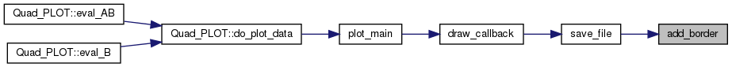
◆ cairo_multiline_size()
| void cairo_multiline_size | ( | double & | len_x, |
| double & | len_y, | ||
| cairo_t * | cr, | ||
| const char * | lines, | ||
| const char * | font_name, | ||
| double | font_size | ||
| ) |
return the size len_x:len_y of the multi_line string lines when printed with font font_name of size font_size
Definition at line 448 of file Plot_gtk.cc.
References cairo_string_size().
Referenced by draw_X_grid(), draw_Y_grid(), and draw_Z_grid().
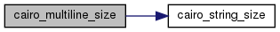
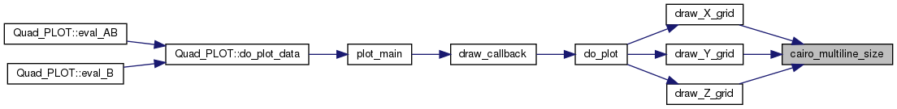
◆ cairo_set_RGB_source()
|
inlinestatic |
same as standard cairo_set_RGB_source() but with Color instead of double red, green, and blue values.
Definition at line 109 of file Plot_gtk.cc.
Referenced by do_plot(), draw_circle(), draw_cross(), draw_delta(), draw_legend(), draw_line(), and draw_quad().
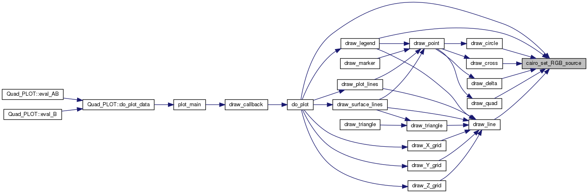
◆ cairo_string_size()
| void cairo_string_size | ( | double & | lx, |
| double & | ly, | ||
| cairo_t * | cr, | ||
| const char * | text, | ||
| const char * | font_name, | ||
| double | font_size | ||
| ) |
return the size of single_line string text when printed with font font_name of /// size font_size
Definition at line 431 of file Plot_gtk.cc.
Referenced by cairo_multiline_size(), draw_legend(), draw_multiline(), draw_Y_grid(), and draw_Z_grid().
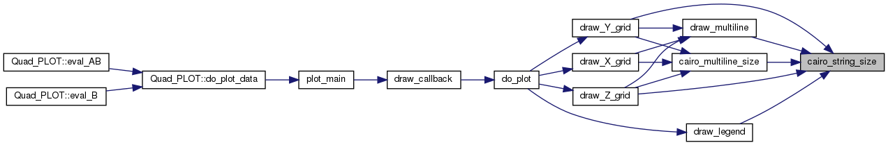
◆ do_plot()
|
static |
plot the data
Definition at line 1226 of file Plot_gtk.cc.
References cairo_set_RGB_source(), draw_legend(), draw_plot_lines(), draw_surface_lines(), draw_X_grid(), draw_Y_grid(), draw_Z_grid(), Plot_window_properties::get_plot_data(), Plot_context::get_total_height(), Plot_context::get_total_width(), Plot_data::is_surface_plot(), and Plot_context::w_props.
Referenced by draw_callback().
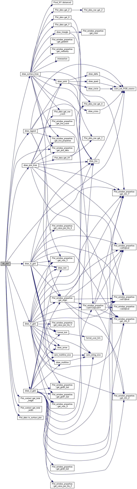
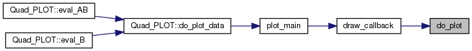
◆ draw_arrow()
draw an arrow from O to A
Definition at line 282 of file Plot_gtk.cc.
References Pixel_XY::x, and Pixel_XY::y.
Referenced by draw_X_grid(), draw_Y_grid(), and draw_Z_grid().
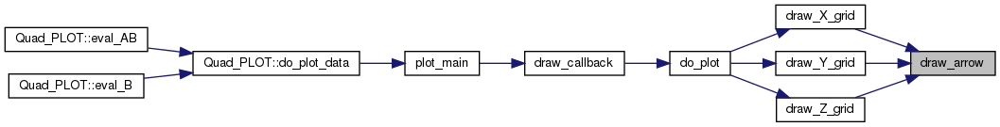
◆ draw_callback()
| gboolean draw_callback | ( | GtkWidget * | drawing_area, |
| cairo_t * | cr, | ||
| gpointer | user_data | ||
| ) |
callback when the plot window shall be redrawn
Definition at line 1438 of file Plot_gtk.cc.
References all_plot_contexts, do_plot(), save_file(), Plot_window_properties::set_window_size(), verbosity, and Plot_context::w_props.
Referenced by plot_main().
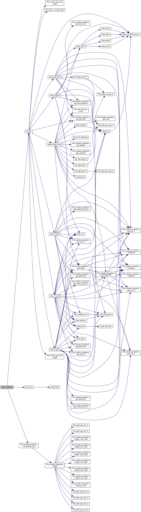
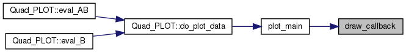
◆ draw_circle()
|
static |
draw a circle with diameter size around P0
Definition at line 149 of file Plot_gtk.cc.
References cairo_set_RGB_source(), Pixel_XY::x, and Pixel_XY::y.
Referenced by draw_point().
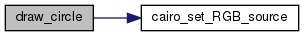
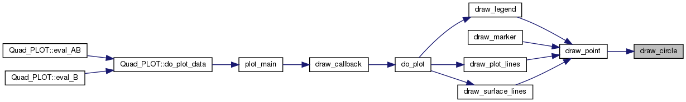
◆ draw_cross()
|
static |
draw a 🞤 or 🞫 with given size around P0
Definition at line 210 of file Plot_gtk.cc.
References cairo_set_RGB_source(), Pixel_XY::x, and Pixel_XY::y.
Referenced by draw_point().
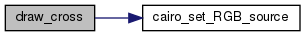
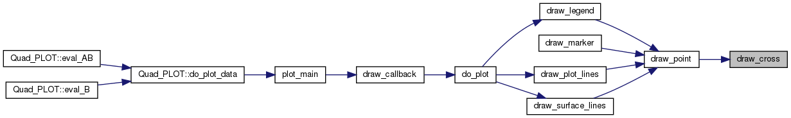
◆ draw_delta()
|
static |
draw a ▲ or ▼ with given size around P0
Definition at line 158 of file Plot_gtk.cc.
References cairo_set_RGB_source(), Pixel_XY::x, and Pixel_XY::y.
Referenced by draw_point().
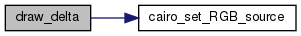
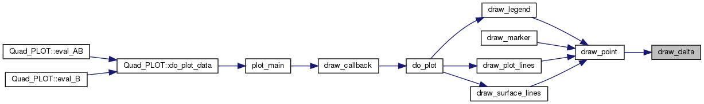
◆ draw_legend()
| void draw_legend | ( | cairo_t * | cr, |
| const Plot_context & | pctx, | ||
| bool | surface_plot | ||
| ) |
draw a legend for the different plot lines
Definition at line 543 of file Plot_gtk.cc.
References cairo_set_RGB_source(), cairo_string_size(), draw_line(), draw_point(), draw_text(), FONT_NAME, Plot_window_properties::get_line_count(), Plot_window_properties::get_line_properties(), Plot_window_properties::get_origin(), Plot_context::w_props, Pixel_XY::x, and Pixel_XY::y.
Referenced by do_plot().
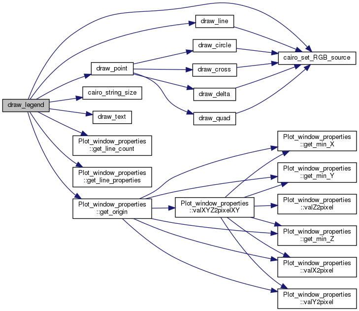
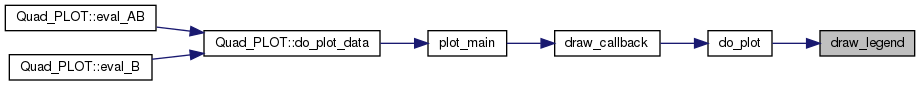
◆ draw_line()
|
static |
draw a line from P0 to P1
Definition at line 120 of file Plot_gtk.cc.
References cairo_set_RGB_source(), Pixel_XY::x, and Pixel_XY::y.
Referenced by draw_legend(), draw_plot_lines(), draw_surface_lines(), draw_triangle(), draw_X_grid(), draw_Y_grid(), and draw_Z_grid().
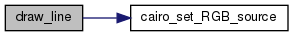
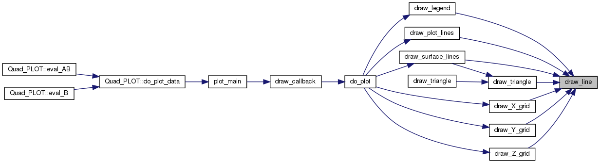
◆ draw_marker()
|
inline |
draw a red marker for debugging purposes (to show where pixel P0 is)
Definition at line 275 of file Plot_gtk.cc.
References draw_point().
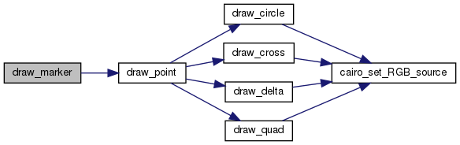
◆ draw_multiline()
| void draw_multiline | ( | cairo_t * | cr, |
| const char * | lines, | ||
| Pixel_XY | xy, | ||
| double | width | ||
| ) |
draw multi-line string lines at position xy
Definition at line 501 of file Plot_gtk.cc.
References cairo_string_size(), FONT_NAME, Pixel_XY::x, and Pixel_XY::y.
Referenced by draw_X_grid(), draw_Y_grid(), and draw_Z_grid().
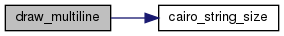
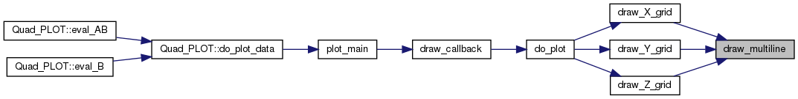
◆ draw_plot_lines()
| void draw_plot_lines | ( | cairo_t * | cr, |
| const Plot_context & | pctx | ||
| ) |
draw normal (2D) data lines
Definition at line 1011 of file Plot_gtk.cc.
References draw_line(), draw_point(), Plot_window_properties::get_line_properties(), Plot_window_properties::get_min_X(), Plot_window_properties::get_min_Y(), Plot_window_properties::get_plot_data(), Plot_data::get_row_count(), Plot_data::get_XY(), Plot_window_properties::valX2pixel(), Plot_window_properties::valY2pixel(), and Plot_context::w_props.
Referenced by do_plot().
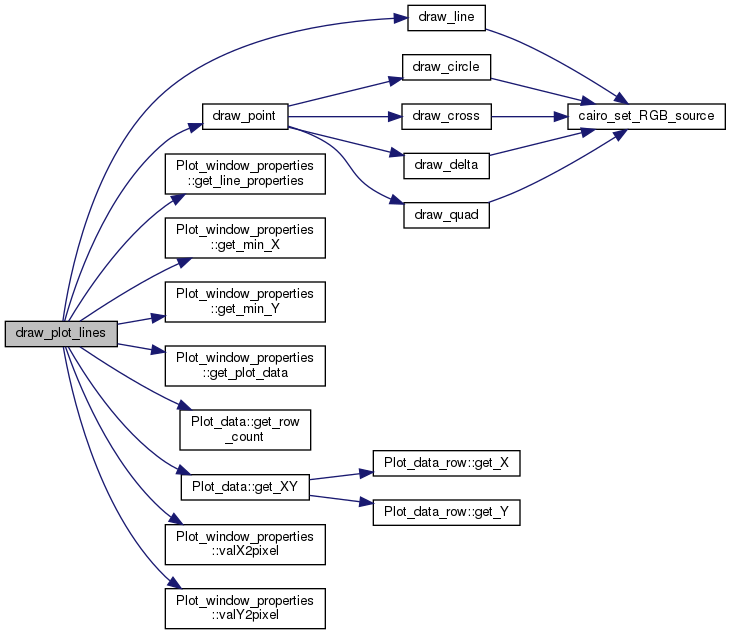
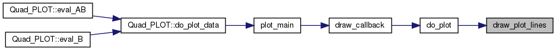
◆ draw_point()
|
static |
draw a point with given point_style and size around P
Definition at line 240 of file Plot_gtk.cc.
References draw_circle(), draw_cross(), draw_delta(), and draw_quad().
Referenced by draw_legend(), draw_marker(), draw_plot_lines(), and draw_surface_lines().
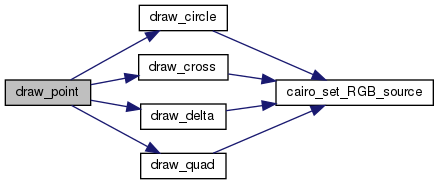
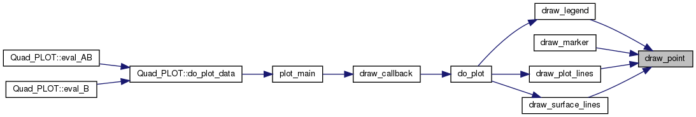
◆ draw_quad()
|
static |
draw a ■ or ◆ with given size around P0
Definition at line 186 of file Plot_gtk.cc.
References cairo_set_RGB_source(), Pixel_XY::x, and Pixel_XY::y.
Referenced by draw_point().
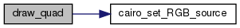
◆ draw_surface_lines()
| void draw_surface_lines | ( | cairo_t * | cr, |
| const Plot_context & | pctx | ||
| ) |
draw surface (3D) data lines
Definition at line 1057 of file Plot_gtk.cc.
References Pixel_XY::distance2(), draw_line(), draw_point(), draw_triangle(), Plot_window_properties::get_gradient(), Plot_window_properties::get_line_properties(), Plot_window_properties::get_max_Y(), Plot_window_properties::get_min_Y(), Plot_window_properties::get_plot_data(), Plot_data::get_row_count(), Plot_window_properties::get_verbosity(), Plot_data::get_X(), Plot_data::get_Y(), Plot_data::get_Z(), intersection(), Plot_context::line, Plot_window_properties::valXYZ2pixelXY(), verbosity, and Plot_context::w_props.
Referenced by do_plot().
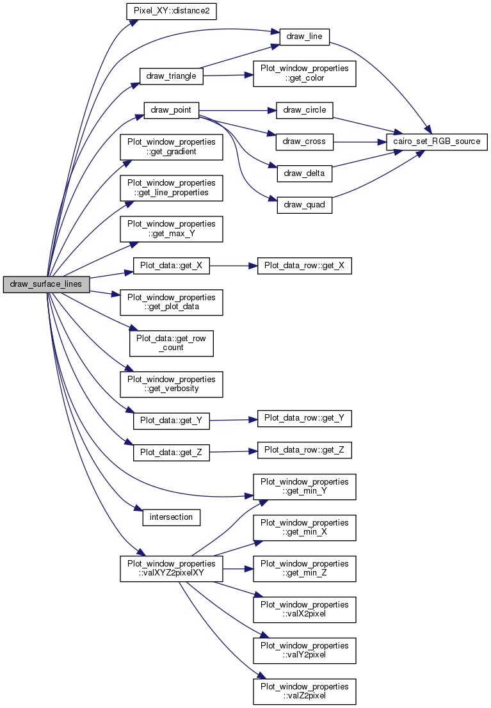
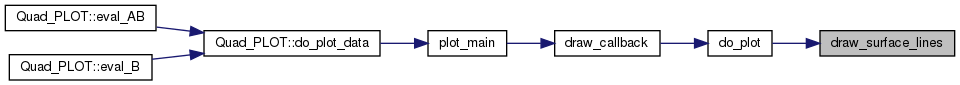
◆ draw_text()
| void draw_text | ( | cairo_t * | cr, |
| const char * | text, | ||
| const Pixel_XY & | xy | ||
| ) |
draw single-line string text at position xy
cairo_show_text(cr, text);
Definition at line 485 of file Plot_gtk.cc.
References FONT_NAME, Pixel_XY::x, and Pixel_XY::y.
Referenced by draw_legend(), draw_X_grid(), draw_Y_grid(), and draw_Z_grid().
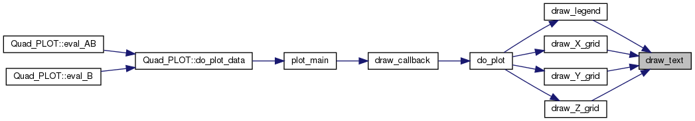
◆ draw_triangle() [1/2]
| void draw_triangle | ( | cairo_t * | cr, |
| const Plot_context & | pctx, | ||
| int | verbosity, | ||
| Pixel_XY | P0, | ||
| double | H0, | ||
| Pixel_XY | P1, | ||
| double | H1, | ||
| Pixel_XY | P2, | ||
| double | H2 | ||
| ) |
draw a 3D triangle where the points P0, P1, and P2 are at visual heights H0, H1, and H2 respectively. This is done by splitting the triangle into two triangles that each have 2 points at the same height.
Definition at line 685 of file Plot_gtk.cc.
References draw_triangle(), Plot_window_properties::get_gradient(), pv_swap(), verbosity, Plot_context::w_props, Pixel_XY::x, and Pixel_XY::y.
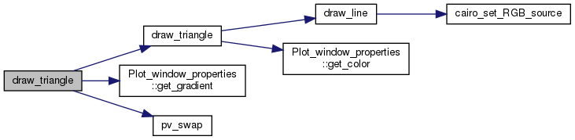
◆ draw_triangle() [2/2]
| void draw_triangle | ( | cairo_t * | cr, |
| const Plot_context & | pctx, | ||
| int | verbosity, | ||
| Pixel_XY | P0, | ||
| double | H0, | ||
| Pixel_XY | P1, | ||
| Pixel_XY | P2, | ||
| double | H12 | ||
| ) |
draw a 3D triangle where one point P0 is at visual height H0 and the other two points P1 and P2 are the same at visual height H12.
Definition at line 648 of file Plot_gtk.cc.
References draw_line(), Plot_window_properties::get_color(), verbosity, Plot_context::w_props, Pixel_XY::x, and Pixel_XY::y.
Referenced by draw_surface_lines(), and draw_triangle().
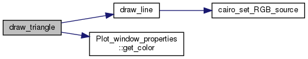
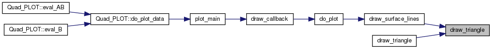
◆ draw_X_grid()
| void draw_X_grid | ( | cairo_t * | cr, |
| const Plot_context & | pctx, | ||
| bool | surface_plot | ||
| ) |
draw the (vertical) X grid-lines of the plot (starting from the X axis)
Definition at line 741 of file Plot_gtk.cc.
References cairo_multiline_size(), draw_arrow(), draw_line(), draw_multiline(), draw_text(), FONT_NAME, format_tick(), Plot_window_properties::get_gridX_last(), Plot_window_properties::get_max_Y(), Plot_window_properties::get_min_X(), Plot_window_properties::get_min_Y(), Plot_window_properties::get_origin(), Plot_window_properties::get_value_per_tile_X(), Plot_window_properties::valX2pixel(), Plot_window_properties::valY2pixel(), Plot_context::w_props, Pixel_XY::x, and Pixel_XY::y.
Referenced by do_plot().
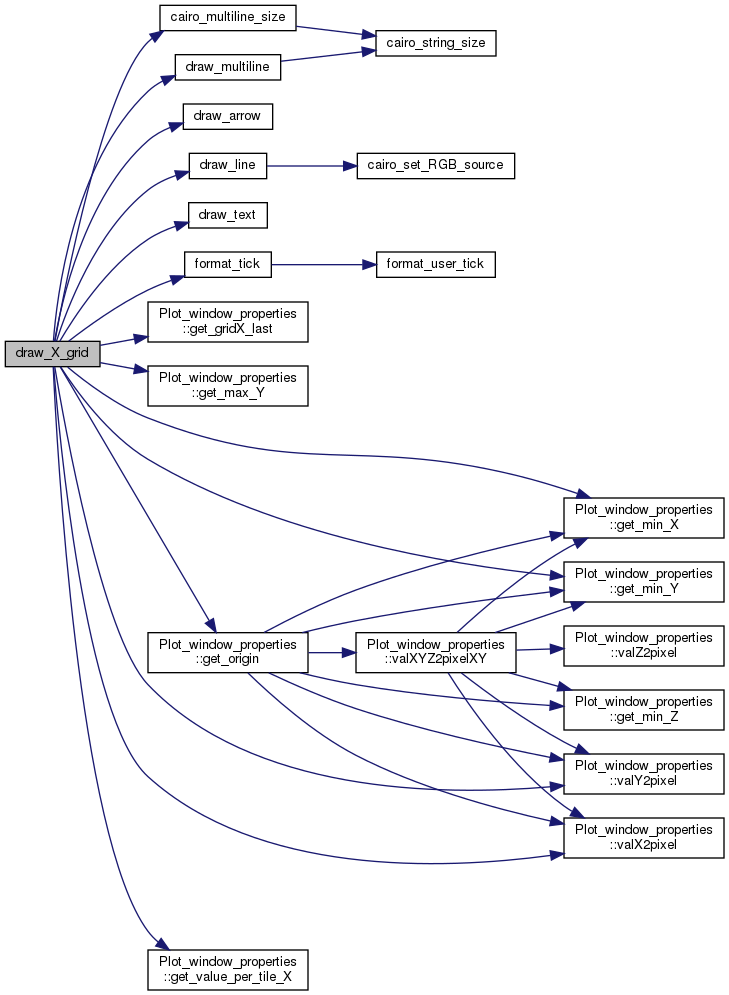
◆ draw_Y_grid()
| void draw_Y_grid | ( | cairo_t * | cr, |
| const Plot_context & | pctx, | ||
| bool | surface_plot | ||
| ) |
draw the (horizontal) Y grid-lines of the plot (starting at the Y axis)
Definition at line 805 of file Plot_gtk.cc.
References cairo_multiline_size(), cairo_string_size(), draw_arrow(), draw_line(), draw_multiline(), draw_text(), FONT_NAME, format_tick(), Plot_window_properties::get_gridY_last(), Plot_window_properties::get_max_X(), Plot_window_properties::get_max_Y(), Plot_window_properties::get_min_X(), Plot_window_properties::get_min_Y(), Plot_window_properties::get_min_Z(), Plot_window_properties::get_origin(), Plot_window_properties::get_value_per_tile_Y(), Plot_window_properties::valX2pixel(), Plot_window_properties::valXYZ2pixelXY(), Plot_window_properties::valY2pixel(), Plot_context::w_props, Pixel_XY::x, and Pixel_XY::y.
Referenced by do_plot().
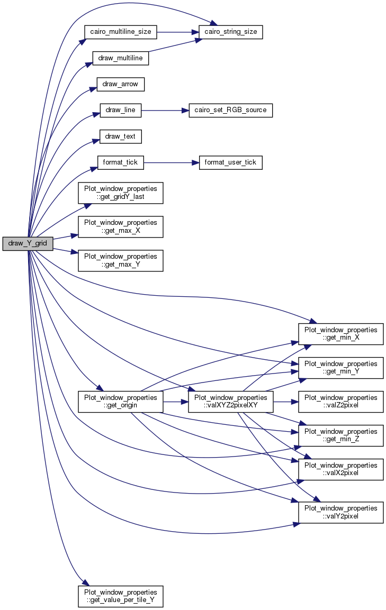
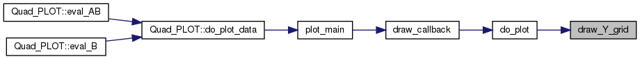
◆ draw_Z_grid()
| void draw_Z_grid | ( | cairo_t * | cr, |
| const Plot_context & | pctx | ||
| ) |
draw the (slanted) Z grid-lines of the plot
Definition at line 892 of file Plot_gtk.cc.
References cairo_multiline_size(), cairo_string_size(), draw_arrow(), draw_line(), draw_multiline(), draw_text(), FONT_NAME, format_tick(), Plot_window_properties::get_gridX_last(), Plot_window_properties::get_gridY_last(), Plot_window_properties::get_gridZ_last(), Plot_window_properties::get_max_X(), Plot_window_properties::get_max_Y(), Plot_window_properties::get_min_X(), Plot_window_properties::get_min_Y(), Plot_window_properties::get_min_Z(), Plot_window_properties::get_origin(), Plot_window_properties::get_value_per_tile_Z(), Plot_window_properties::valX2pixel(), Plot_window_properties::valXYZ2pixelXY(), Plot_window_properties::valY2pixel(), Plot_context::w_props, Pixel_XY::x, and Pixel_XY::y.
Referenced by do_plot().
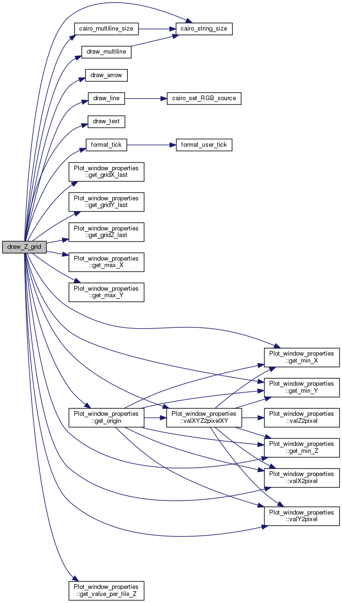
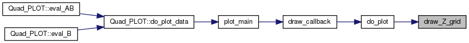
◆ format_tick()
| const char * format_tick | ( | double | val, |
| double | dV, | ||
| int | idx, | ||
| const char * | format | ||
| ) |
format the text of tick idx (with value val) according to format.
Definition at line 377 of file Plot_gtk.cc.
References format_user_tick().
Referenced by draw_X_grid(), draw_Y_grid(), and draw_Z_grid().
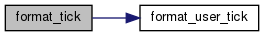
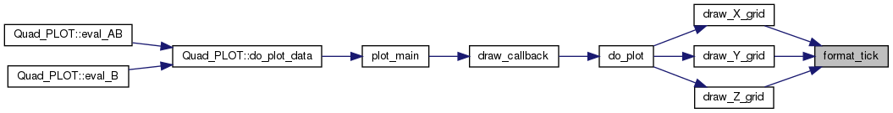
◆ format_user_tick()
| const char * format_user_tick | ( | double | val, |
| int | tidx, | ||
| const char * | format, | ||
| const char * | percent | ||
| ) |
format val according to format (with percent pointing to % in format, e.g. d or f like in printf()).
Definition at line 321 of file Plot_gtk.cc.
Referenced by format_tick().
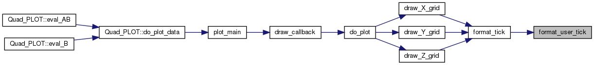
◆ gtk_main_wrapper()
|
static |
make gtk_main() suitable for pthread_create() and maybe tell when it is finished
Definition at line 1494 of file Plot_gtk.cc.
References all_plot_contexts, plot_window_count, verbosity, and Plot_context::w_props.
Referenced by Quad_PNG::display_PNG_main(), and plot_main().
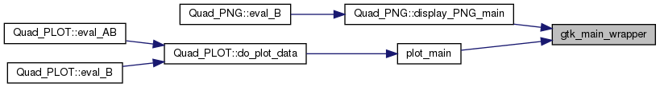
◆ plot_destroyed()
| gboolean plot_destroyed | ( | GtkWidget * | top_level | ) |
callback when the plot window is destroyed
Definition at line 1261 of file Plot_gtk.cc.
References all_plot_contexts, verbosity, and Plot_context::window.
Referenced by plot_main().
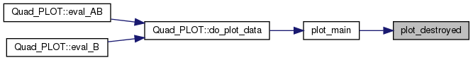
◆ plot_main()
| void * plot_main | ( | void * | vp_props | ) |
the main() program of the thread that handles one plot window.
Definition at line 1548 of file Plot_gtk.cc.
References all_plot_contexts, draw_callback(), Plot_context::drawing_area, Plot_context::get_total_height(), Plot_context::get_total_width(), Plot_window_properties::get_verbosity(), gtk_main_wrapper(), plot_destroyed(), plot_window_count, Quad_PLOT::plot_window_sema, verbosity, and Plot_context::window.
Referenced by Quad_PLOT::do_plot_data().
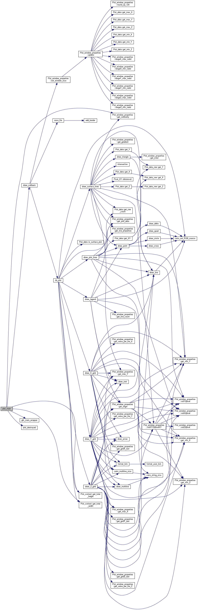
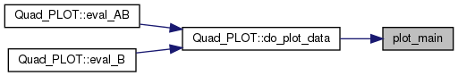
◆ plot_stop()
| const Plot_window_properties * plot_stop | ( | const Plot_window_properties * | vp_props | ) |
the window properties of one plot window.
Definition at line 1517 of file Plot_gtk.cc.
References all_plot_contexts, Plot_context::w_props, and Plot_context::window.
Referenced by Quad_PLOT::eval_B().
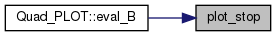
◆ pv_swap()
swap pixels P0 with value Y0, and P1 with value Y1
Definition at line 639 of file Plot_gtk.cc.
Referenced by draw_triangle().

◆ save_file()
|
static |
save the pixels of the plot to a file
Definition at line 1390 of file Plot_gtk.cc.
References add_border(), and Plot_context::w_props.
Referenced by draw_callback().
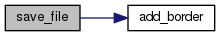
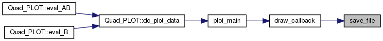
Variable Documentation
◆ all_plot_contexts
|
static |
all Plot_contexts (= all open windows) for ⎕PLOT
Definition at line 100 of file Plot_gtk.cc.
Referenced by draw_callback(), gtk_main_wrapper(), plot_destroyed(), plot_main(), and plot_stop().
◆ FONT_NAME
| const char* FONT_NAME = "sans-serif" |
the font to be used for texts
Definition at line 51 of file Plot_gtk.cc.
Referenced by draw_legend(), draw_multiline(), draw_text(), draw_X_grid(), draw_Y_grid(), and draw_Z_grid().
◆ plot_window_count
|
static |
the number of open plot windows (to see when the last one was closed).
Definition at line 103 of file Plot_gtk.cc.
Referenced by Quad_PNG::display_PNG_main(), gtk_main_wrapper(), and plot_main().
◆ verbosity
|
static |
debug verbosity
Definition at line 25 of file Plot_gtk.cc.
Referenced by draw_callback(), draw_surface_lines(), draw_triangle(), gtk_main_wrapper(), plot_destroyed(), plot_main(), Quad_PNG::read_PNG_file(), Quad_PNG::window_control(), and Quad_PNG::write_PNG_file().